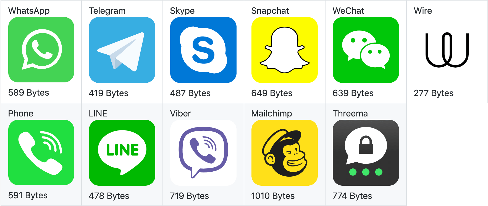
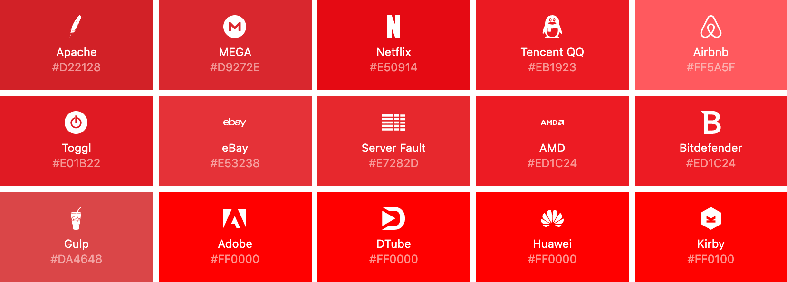
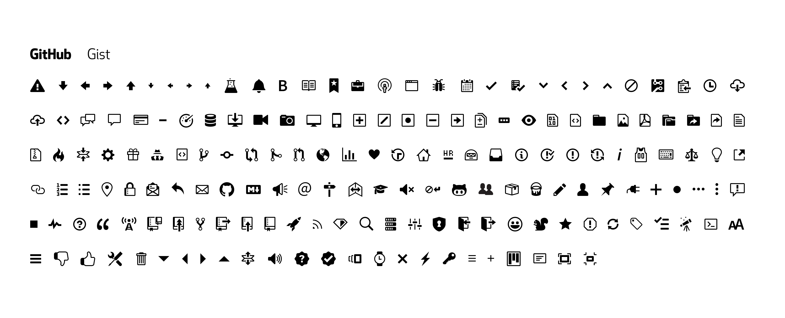
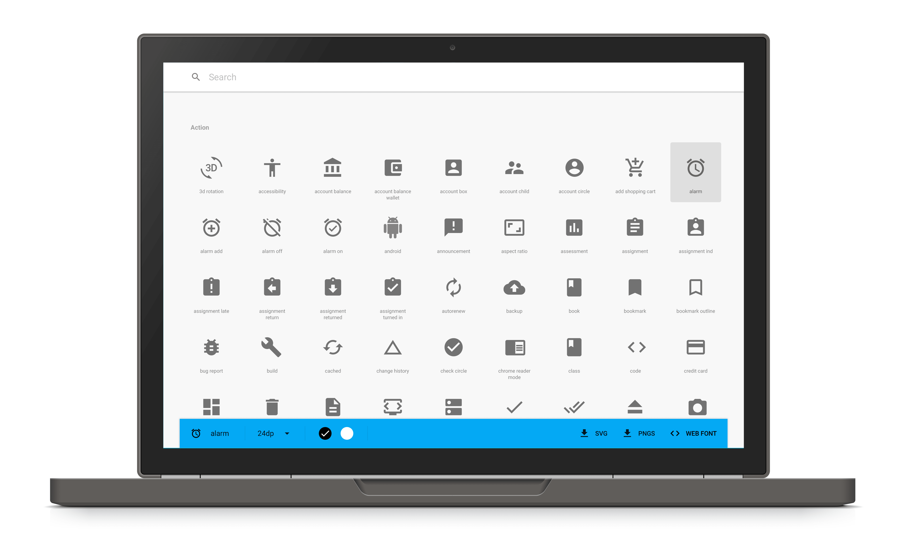
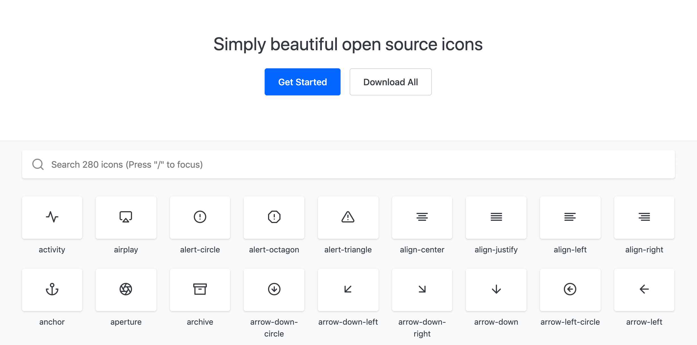
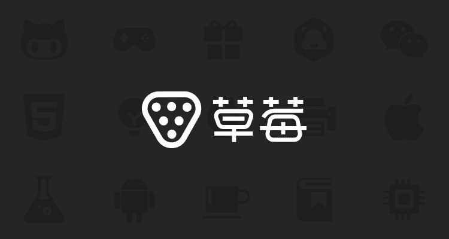
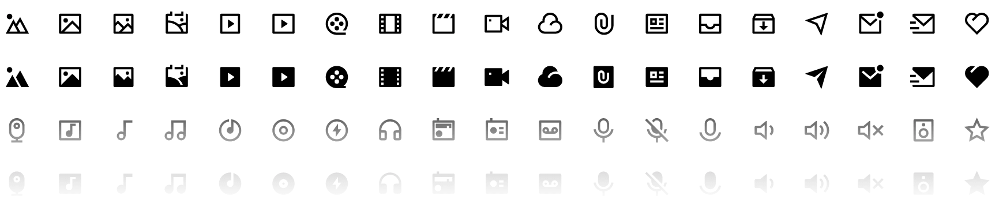

精致好看的图标能够为你的项目增色不少，今天 HelloGitHub 就整理了一期图标库精选系列，希望你可以从中找到自己喜欢的图标库。😂
下面就跟我来一场视觉的盛宴，我会一一介绍 GitHub 上品牌、流行、极小，各具特色的免费精致开源的图标库。
常见网站和 app 的 logo 图标库，每个图标均小于 1KB 制作精美，下面是社交部分的图标样例：

流行品牌的免费 SVG 图标库，对比第一个库图标数量更多，而且支持英文搜索。但是，不足之处是图标不是彩色的。

GitHub 官方开源的 GitHub 网站上用的图标库。

Google 官方开源基于 Material Design 设计风格的图标库。

应该是当下最流行的图标库 GitHub 上 Star 数最多的图标库。但是样式感觉到处见，有些没有新鲜感。
简单漂亮的开源图标库，目前共计 280+ 个图标，支持在线搜索查找图标。个人感觉比 Font-Awesome 好看，你怎么看？

极小极简的图标库。小到什么程度？100+ 图标，体积才只有 12KB。
无任何依赖纯 CSS 实现的图标库，直接复制代码就可实现图标样式。
一套免费、精致的开源图标库（如果想要赞助作者可以购买 pro 版）。

一套免费、可商用、设计精美、细致的图标库。这个项目可以让开发者、设计师在一个图标库中快速找到适合的图标，用于自己的网站或 APP 开发。不同于混搭收集的图标库，RemixIcon 的每一枚图标都是由设计师精心设计而成，并且每一枚图标都包含填充和描边两种风格，便于切换使用。

“看完了，还不够？<往期内容>
如果你发现了好玩、有意义的开源项目 点击这里 分享你觉得有趣的项目。
最近开了公众号，后续公众号会针对月刊推荐过的内容精选、梳理，做成系列的文章发布。月刊也会同时发布在公众号，便于第一时间阅读。
欢迎关注 HelloGitHub 公众号，获取更多开源项目的资料和内容。